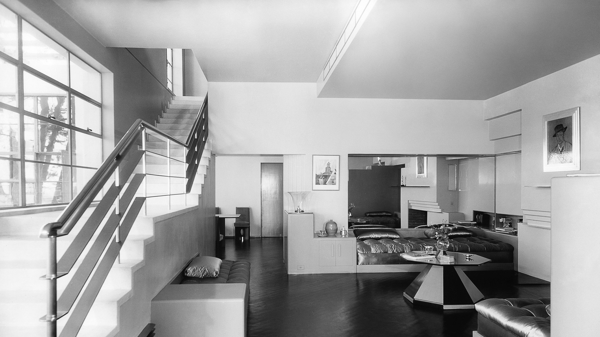

Fashion - Furniture - Architecture in 1930
by Fashion - Furniture - Architecture in 1930
Last Updated - 5 Days Ago

1930 Fashion in Clothing, Furniture and Architecture
My most favorite style in clothing and furniture is the 1930 Art Deco style, besides the Art Nouveau style of the 1920s. Parallel with those styles we had the Amsterdam School movement in The Netherlands with architects like Hendrik Berlage (traditionalism) and Michel de Klerk and Piet Kramer (expressionism). I particularly like the simplicity and functionalism of those styles. In this article I want to show you the 1930 style in clothes and furniture through the old photographs that I found in the photo albums of my late Aunt Greet and that of my own mom. Looking at the old photographs, my mom was quite fashion minded.
It Was Depression Time in the 1930s
The 1930 are most known as the era of the Great Depression. I'm sure that the fashion of the 1930s was a result of this depression. There was no money to spend on fancy clothing, like in the era before when lots of dresses were decorated with jewelry. The length of the robes went down again to just above the ankles. The fashion became more unpretentious, simpler and homely. It was the time of knitted sweaters, vests and even whole dresses. The colors were rather sober, but despite all that, I still think it's one of the most elegant fashion periods in the last centuries. Though when you see the videos of 1930 fashion shows you wouldn't think there was a depression going on, but of course the really rich will always stay the really rich.
My Mom Was Fashion-Conscious
I know my Mom has always been very fashion-conscious and that she loved to wear those fashionable clothes. Her mother in law to be thought she was too modern with all those fancy clothing and wearing lipstick. I also know that my mom didn't come from a rich family and that she made a lot of her clothes by herself using patterns. My mom is the one in the middle.
1930 Boot Shapers
I found these boot shapers in the house of my Aunt Greet and at first I didn't know what they were, until someone mentioned that they might be used to keep tall boots in shape. I had never seen them before and I don't know how old they are exactly. I only know that she and her dad moved into this house in 1930 after her mom passed away a year before. I think they might have been her mom's or dad's boot shapers.
1930 Fashion in Buildings
1930 Fashion Style from My Aunt Greets Photo Books
After my Aunt Greet passed away in 2005, I had to clean out her house and I was amazed to find so many things that she had kept through the years. The house was build in 1930 and decorated with1930 style furniture (Art Deco and Amsterdam School) and it had never been changed since then. She had kept quite a bit of old photo albums and had written where and when the photos had been taken, so I just had to pick the ones of the 1930s to get an impression of what people were wearing in that time. First I will show you some photos of the house itself, because not only the furniture was from the 1930s, but also the kitchen and the bathroom had never been changed. After that there's a photo gallery of the fashion I found in the album of my aunt.
Amsterdam School - Art Deco Style
My Aunt's house was furnished in 1930 when her dad bought the house and it's all Amsterdam School and Art Deco. I inherited the furniture and after cleaning and restoring it, I'm going to put it in our own guesthouse. We have the dining table with chairs, a sideboard, a small book chest and a tea chest with glass and all the most beautiful Amsterdam School lamps. I've bought an Art deco couch and lounge chairs, so it will look absolutely gorgeous when it's done and ready, but that might take another year. The kitchen sink will be an old porcelain one. It will just look beautiful, but it's still a lot of work.
Leave a Comment:
Search
Advertisement